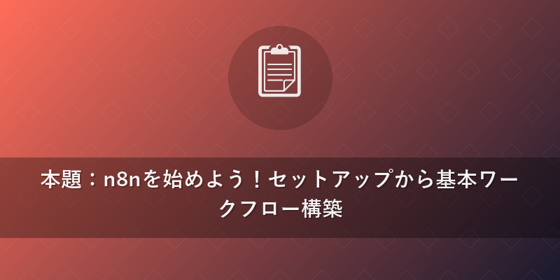
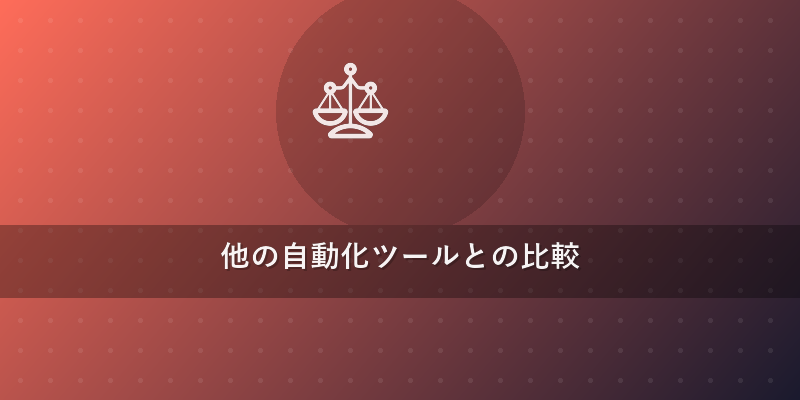
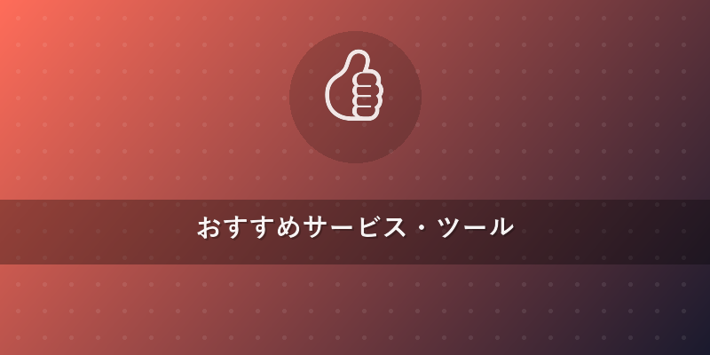

この記事でわかること
- n8nのセルフホスト環境（Docker）構築から基本的なワークフロー作成まで、初心者でもスムーズに始められる手順
- 2026年最新のn8nを活用したAIエージェント連携（OpenAI, LangChain, ベクトルDB）による高度な自動化の実践テクニック
- n8nとZapier、Make、Power Automateといった主要な自動化ツールの客観的な比較により、最適なツール選択のヒント
結論
n8nは、セルフホストの柔軟性と豊富な統合オプション、そして何よりもオープンソースである点が最大の強みです。特に近年進化が著しいAI連携においては、APIだけでなくLangChainやベクトルDBとの統合を通じて、他のツールでは実現が難しい高度な自動化ワークフローを構築できます。初期設定はやや学習コストがかかりますが、一度習得すれば業務効率を飛躍的に向上させる強力なツールとなります。n8n 使い方をマスターすることで、あなたの自動化スキルは間違いなく一段階レベルアップするでしょう。

本題：n8nを始めよう！セットアップから基本ワークフロー構築
1. n8nのインストールと初期設定（Docker推奨）
n8nを始める最も手軽で推奨される方法は、Dockerを利用したセルフホスト環境の構築です。これにより、OSに依存せず、迅速かつクリーンな環境を構築できます。ここでは、Docker Composeを使った方法を解説します。
まず、DockerとDocker Composeがインストールされていることを確認してください。
1.1. docker-compose.yml ファイルの作成
以下の内容で docker-compose.yml ファイルを作成します。
version: '3.8'
services:
n8n:
image: n8n.io/n8n
restart: always
ports:
- "5678:5678"
environment:
- N8N_HOST=${N8N_HOST:-localhost}
- N8N_PORT=5678
- N8N_PROTOCOL=http
- WEBHOOK_URL=http://${N8N_HOST:-localhost}:5678/
- N8N_BASIC_AUTH_ACTIVE=true
- N8N_BASIC_AUTH_USER=${N8N_USER}
- N8N_BASIC_AUTH_PASSWORD=${N8N_PASSWORD}
- GENERIC_TIMEZONE=Asia/Tokyo
volumes:
- ./n8n_data:/home/node/.n8n
1.2. 環境変数の設定
.env ファイルを docker-compose.yml と同じディレクトリに作成し、以下の内容を記述します。N8N_USER と N8N_PASSWORD はログイン認証情報となるため、必ずご自身で設定してください。
N8N_HOST=localhost
N8N_USER=yourusername
N8N_PASSWORD=yourpassword
1.3. n8nの起動
ターミナルで docker-compose.yml があるディレクトリに移動し、以下のコマンドを実行します。
docker-compose up -d
これでn8nがバックグラウンドで起動します。ブラウザで http://localhost:5678 にアクセスし、設定したユーザー名とパスワードでログインすれば、n8nのUIが表示されます。これでn8n インストールは完了です。
2. 基本的なワークフローの作成：GmailからSlackへの通知
n8n 始め方の第一歩として、Gmailの新しいメールをトリガーに、特定のキーワードを含むメールをSlackに通知するワークフローを作成してみましょう。これはn8n チュートリアルの定番です。
2.1. ワークフローの新規作成 n8nのダッシュボードから「Create new workflow」をクリックします。
2.2. トリガーノードの設定（Gmail Trigger） 1. 左側のノードリストから「Gmail Trigger」を検索し、ドラッグ＆ドロップでキャンバスに配置します。 2. ノードをクリックし、右側の設定パネルで「Credentials」を設定します。初めての場合は「New Credential」を選択し、Googleアカウントで認証を行います。 3. 「Watch for」を「New Messages」に設定します。 4. 必要に応じて「Filter」で件名や送信元を絞り込むことも可能です。ここではシンプルに設定します。
2.3. 条件分岐ノードの設定（IF Node）
1. トリガーノードの右側にある「+」をクリックし、「IF」ノードを検索して追加します。
2. IFノードの設定パネルで、条件を追加します。「Value 1」にはGmail Triggerの出力からメール本文 {{ $json.text }} を選択します。「Operation」を「Contains」に設定し、「Value 2」に通知したいキーワード（例: 「重要」）を入力します。
2.4. 通知ノードの設定（Slack）
1. IFノードの「True」ブランチの右側にある「+」をクリックし、「Slack」ノードを検索して追加します。
2. Slackノードをクリックし、「Credentials」を設定します。Slackアカウントで認証し、メッセージを投稿したいチャンネルを選択します。
3. 「Text」フィールドに、通知メッセージを記述します。Gmailの出力データを活用し、以下のように設定できます。
新しい重要メールを受信しました！
送信者: {{ $json.from }}
件名: {{ $json.subject }}
本文の一部: {{ $json.text.substring(0, 200) }}...
2.5. ワークフローの保存と有効化 1. ワークフロー右上の「Save」ボタンをクリックし、名前を付けます（例:「Gmail to Slack重要通知」）。 2. 「Active」スイッチをオンにしてワークフローを有効化します。
これで、Gmailに「重要」というキーワードを含む新しいメールが届くと、Slackに自動で通知されるワークフローが完成しました。これがn8n 初心者向けの基本的なワークフローです。
3. AIエージェント連携による高度な自動化：GPT-4oを活用した記事要約と分類
2026年現在、AI連携はn8nの自動化において不可欠な要素です。ここでは、RSSフィードから記事を読み込み、GPT-4o（または最新のOpenAIモデル）で要約し、さらに特定のカテゴリに分類してGoogle Sheetsに記録するワークフローを構築します。LangChainやベクトルDBとの連携は、より複雑なAIエージェント構築を可能にします。
3.1. ワークフローの構築手順
1. RSS Feed Read Trigger: 定期的に更新をチェックしたいブログのRSSフィードURLを設定します。
2. Split In Batches: 複数の記事が一度に読み込まれた場合、1つずつ処理するために分割します。
3. OpenAI Node (GPT-4o for Summary):
* 「Credentials」にOpenAI APIキーを設定します。
* 「Model」を gpt-4o (または最新の強力なモデル)に設定します。
* 「System Message」に あなたはプロの要約担当者です。以下の記事を300字以内で要約してください。 と指示します。
* 「User Message」に {{ $('RSS Feed Read').item.json.description }} や {{ $('RSS Feed Read').item.json.content }} など、記事の本文データを渡します。
4. OpenAI Node (GPT-4o for Categorization):
* 同じくOpenAI APIキーを設定します。
* 「System Message」に あなたはプロのコンテンツ分類担当者です。以下の要約された記事を「AI」「Web開発」「ビジネス」「その他」のいずれかのカテゴリに分類し、カテゴリ名のみを回答してください。 と指示します。
* 「User Message」には、前のOpenAIノードで生成された要約結果 {{ $('OpenAI').item.json.choices[0].message.content }} を渡します。
5. Google Sheets Node:
* 「Credentials」にGoogleアカウントを設定します。
* 「Operation」を「Append Row」に設定し、記事タイトル、URL、要約、そしてAIが分類したカテゴリをスプレッドシートに追加します。
* Value フィールドに {{ $('RSS Feed Read').item.json.title }}, {{ $('RSS Feed Read').item.json.link }}, {{ $('OpenAI').item.json.choices[0].message.content }} (要約結果), {{ $('OpenAI1').item.json.choices[0].message.content }} (カテゴリ結果) をマッピングします。
3.2. LangChainとベクトルDB連携の可能性 より高度なAIエージェントを構築するには、n8nのLangChainノードやベクトルDB（例: Pinecone, Weaviate）ノードが非常に強力です。例えば、社内ドキュメントをベクトルDBに格納し、ユーザーからの質問に対してLangChainを通じて関連ドキュメントを検索し、GPT-4oで回答を生成するRAG（Retrieval Augmented Generation）システムをn8nワークフロー内で構築することが可能です。これにより、最新情報に基づいた正確なAI回答を自動化できます。{{internal_link:n8n AIエージェント構築}}も参照してください。
ワークフロー実装テクニック
1. トリガー設定の多様性
n8nは非常に多くのトリガーノードを提供しています。 * Webhook: 外部サービスからのHTTPリクエストを待ち受け、ワークフローを開始します。REST APIエンドポイントとしても利用可能です。 * Cron: 指定した間隔（例: 毎日午前9時、毎週月曜日）でワークフローを定期実行します。先のRSSフィードリーダーのような定時処理に最適です。 * App Triggers: Gmail, Slack, Trelloなど、特定のアプリケーション内のイベント（新しいメール、メッセージ、カード作成など）をリアルタイムで検知します。
2. ノード接続とデータフローの理解
ワークフローは複数のノードを線でつなぐことで構築されます。この線はデータの流れを表しており、前のノードの出力データが次のノードの入力データとなります。ノード設定で {{ $json.propertyName }} のように参照することで、動的にデータを受け渡しできます。必要に応じて「Set」ノードでデータの整形や追加を行うことも有効です。
3. エラーハンドリング
自動化ワークフローでは予期せぬエラーが発生することがあります。n8nでは、以下の方法でエラーハンドリングを実装できます。 * Error Workflow: ワークフロー全体でエラーが発生した場合に、別個のエラー処理ワークフローを呼び出す設定が可能です。これにより、エラー通知（Slack, Email）や再試行ロジックを実装できます。 * Continue On Error: 特定のノードでエラーが発生してもワークフロー全体を停止させず、次のノードに進めるオプションです。部分的なエラーを許容する場合に有用です。
4. 条件分岐とループ処理
- IFノード: 前述の例のように、特定の条件に基づいて処理を分岐させます（True/False）。複雑な条件には「OR」「AND」を組み合わせることも可能です。
- Switchノード: 単一の入力値に基づいて複数の出力パスに分岐させます。例えば、カテゴリ分類結果に応じて異なるSlackチャンネルに通知するといった用途に便利です。
- Looping: n8nはデフォルトでアイテムごとにノードを実行するため、配列データに対しては自動的にループ処理が行われます。特定のノードでループ動作を変更したい場合は「Item Lists」ノードなどを利用します。

他の自動化ツールとの比較
n8nは非常に強力なツールですが、他の主要な自動化ツールと比較してどのような特徴があるのでしょうか。ここでは、Zapier、Make（旧Integromat）、Microsoft Power Automateと比較し、その違いを表形式で整理します。
| 特徴 | n8n | Zapier | Make (Integromat) | Microsoft Power Automate |
|---|---|---|---|---|
| ライセンス | オープンソース（Self-hosted版） | |||
| クラウド版あり | プロプライエタリ | プロプライエタリ | プロプライエタリ | |
| ホスティング | Self-hosted, Cloud | Cloudのみ | Cloudのみ | Cloud, On-premise Gateway |
| AI連携 | 高度 (OpenAI, LangChain, ベクトルDB等ノードが豊富) | API連携、一部AIアプリ統合 | API連携、一部AIアプリ統合 | Azure AIサービスとの密な連携 |
| UI/UX | ノードベースの視覚的フロー | |||
| 学習コストやや高 | イベント駆動型、シンプルで直感的 | シナリオベースの視覚的フロー | ||
| 学習コスト中程度 | フローベースの視覚的フロー | |||
| Microsoft製品連携が容易 | ||||
| 柔軟性 | 高（JavaScriptコード実行、カスタムノード） | 低〜中（コード機能は高度プラン） | 中〜高（カスタムHTTPリクエスト） | 中〜高（PowerShell/Python実行機能） |
| 価格体系 | Self-hosted: 無料 | |||
| Cloud:従量課金/プラン | イベント数/タスク数に基づくサブスクリプション | オペレーション数/データ量に基づくサブスクリプション | Microsoft 365/Dynamics 365にバンドル、個別プラン | |
| 対象ユーザー | 開発者、DevOps、テクニカルユーザー | 初心者〜ビジネスユーザー | ビジネスユーザー、IT管理者 | Microsoftエコシステムユーザー |
n8nは、特に自社インフラで自動化を運用したい、あるいは高度なカスタムロジックやAIエージェントを自由に構築したいDevOpsエンジニアやテクニカルユーザーに最適です。クラウド版も提供されているため、SaaSとしての手軽さも兼ね備えています。一方で、Zapierはプログラミング知識がなくてもすぐに始められる手軽さが魅力です。Makeは視覚的なフロー構築と柔軟性のバランスが取れており、Power AutomateはMicrosoft製品との親和性が抜群です。
よくある質問（FAQ）
Q1: n8nのセルフホスト版とクラウド版、どちらを選ぶべきですか？
A1: セルフホスト版は無料で利用でき、データが自身のインフラ内に留まるため、データのプライバシーやセキュリティ要件が厳しい場合に最適です。一方で、サーバーの管理やメンテナンスは自分で行う必要があります。クラウド版は、サーバー管理の手間がなく、すぐに使い始められる手軽さが魅力です。スケーラビリティや高可用性も保証されますが、利用料金が発生します。セキュリティやコスト、管理の手間を考慮して選択しましょう。{{internal_link:n8n セルフホストとクラウド比較}}
Q2: n8nで作成したワークフローがうまく動作しません。どこからデバッグを始めれば良いですか？
A2: まず、ワークフローが有効化されているか確認してください。次に、各ノードの実行結果を確認します。n8nのUIでは、ワークフローを実行した際に各ノードの入出力データを確認できる履歴機能があります。ここで意図しないデータが渡されていないか、またはエラーメッセージが出ていないかを確認します。トリガーノードが正しく設定されているか、認証情報（Credentials）が期限切れになっていないかも確認すべきポイントです。必要であれば、途中に「Log」ノードを挟んで変数の内容を出力し、デバッグに役立てることもできます。
Q3: n8nでAIを使った複雑な処理を実現したいのですが、どのように学習を進めれば良いですか？
A3: n8nでAI連携を深めるには、まずOpenAIノードの基本的な使い方（テキスト生成、要約、分類など）から始め、ChatGPTなどのLLMのプロンプトエンジニアリングの基本を学ぶと良いでしょう。次に、LangChainやベクトルDBといった専門的なノードのドキュメントを読み込み、それぞれの概念（RAG、エージェント、チェーンなど）を理解することが重要です。n8nのコミュニティフォーラムや公式ブログ（n8n Blog）には多くの実践例やチュートリアルが公開されており、これらを参考にしながら実際に手を動かして試すのが最も効果的な学習方法です。

おすすめサービス・ツール
この記事で紹介した内容を実践するために、以下のサービスがおすすめです。
※ 上記リンクからご利用いただくと、サイト運営の支援になります。
まとめ
この記事では、n8n 使い方をテーマに、2026年最新の視点からセルフホスト環境の構築、基本的なワークフローの作成、そして進化するAIエージェント連携の実践術までを幅広く解説しました。n8nは、そのオープンソースとしての自由度と、高度なカスタマイズ性、そしてAIとの強力な連携により、あなたの業務自動化の可能性を無限に広げるツールです。
初めてn8nに触れる方から、他の自動化ツールからの移行を検討している方まで、このガイドが皆さんの自動化ジャーニーの一助となれば幸いです。まずはDockerを使ったインストールから始め、実際に手を動かしながらn8nの奥深い世界を体験してください。そして、ぜひ{{internal_link:n8n コミュニティ}}にも参加して、最新の情報をキャッチアップし、自動化のスキルを磨き続けていきましょう！
あなたの業務がn8nによってよりスマートに、より効率的になることを願っています。